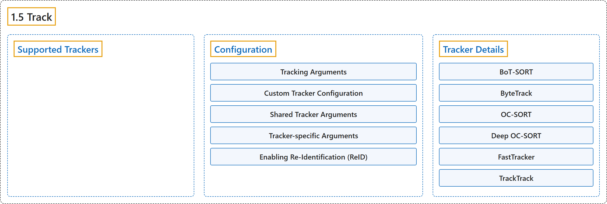

1.5 Track
Classification

Glossary
| Term | Definition | 中文翻译 | Source |
|---|---|---|---|
| 1.5 Track 跟踪 |
"Object tracking in the realm of video analytics is a critical task that not only identifies the location and class of objects within the frame but also maintains a unique ID for each detected object as the video progresses." | 视频分析中的目标跟踪是一项关键任务，它不仅识别画面中物体的位置和类别，还随着视频推进为每个检测到的物体保持唯一的 ID。 | Ultralytics, n.d., "Multi-Object Tracking with Ultralytics YOLO", para. 1 |
| Supported Trackers 支持的跟踪器 |
(context) "Ultralytics YOLO ships with six built-in trackers." | （语境）Ultralytics YOLO 内置六个跟踪器。 | Ultralytics, n.d., "Supported Trackers", para. 1 |
| Configuration 配置 |
(No definition) | （无定义） | Ultralytics, n.d., "Configuration" |
| Tracking Arguments 跟踪参数 |
(context) "Tracking configuration shares properties with Predict mode, such as conf, iou, and show." |
（语境）跟踪配置与预测模式共用一些属性，例如 conf、iou 和 show。 |
Ultralytics, n.d., "Tracking Arguments", para. 1 |
| Custom Tracker Configuration 自定义跟踪器配置 |
(context) "Ultralytics also allows you to use a modified tracker configuration file." | （语境）Ultralytics 还允许你使用修改过的跟踪器配置文件。 | Ultralytics, n.d., "Custom Tracker Configuration", para. 1 |
| Shared Tracker Arguments 共享跟踪器参数 |
(context) "The following parameters are common to most tracker YAML files" | （语境）以下参数为大多数跟踪器 YAML 文件所共有 | Ultralytics, n.d., "Shared Tracker Arguments", para. 1 |
| Tracker-specific Arguments 跟踪器专属参数 |
(context) "Each algorithm exposes additional knobs on top of the shared parameters." | （语境）每个算法都在共享参数之外提供额外的调节项。 | Ultralytics, n.d., "Tracker-specific Arguments", para. 1 |
| Enabling Re-Identification (ReID) 启用重识别（ReID） |
(context) "ReID is disabled by default to minimize overhead." | （语境）ReID 默认关闭，以尽量减少开销。 | Ultralytics, n.d., "Enabling Re-Identification (ReID)", para. 1 |
| model: auto model: auto |
"model: auto — Uses native YOLO detector features, adding minimal overhead." |
model: auto：使用 YOLO 检测器自身的特征，开销极小。 |
Ultralytics, n.d., "Enabling Re-Identification (ReID)", item 1 |
| Custom ReID model 自定义 ReID 模型 |
"Custom ReID model — Point model: at a .pt checkpoint or a compatible exported embedding model" |
自定义 ReID 模型：把 model: 指向一个 .pt 检查点或兼容的已导出嵌入模型 |
Ultralytics, n.d., "Enabling Re-Identification (ReID)", item 2 |
| Tracker Details 跟踪器详解 |
(context) "The sections below describe each tracker's design, specific parameters, and tuning tips." | （语境）下面各节介绍每个跟踪器的设计、专属参数和调参建议。 | Ultralytics, n.d., "Tracker Details", para. 1 |
| BoT-SORT BoT-SORT |
"BoT-SORT (Aharon et al., 2022) extends ByteTrack with camera-motion compensation and optional ReID:" | BoT-SORT（Aharon 等，2022）在 ByteTrack 的基础上加入相机运动补偿和可选的 ReID： | Ultralytics, n.d., "BoT-SORT", para. 1 |
| Camera Motion Compensation (CMC) 相机运动补偿（CMC） |
"Camera Motion Compensation (CMC): an affine warp estimated each frame (sparse optical flow by default; ORB / ECC also available) is applied to Kalman states before IoU matching." | 相机运动补偿（CMC）：每帧估计一个仿射变换（默认用稀疏光流；也可用 ORB / ECC），在 IoU 匹配前作用到卡尔曼状态上。 | Ultralytics, n.d., "BoT-SORT", item 1 |
| Optional ReID 可选 ReID |
"Optional ReID: appearance embeddings can be fused into the cost matrix." | 可选 ReID：外观嵌入可以融合进代价矩阵。 | Ultralytics, n.d., "BoT-SORT", item 2 |
| ByteTrack ByteTrack |
"ByteTrack (Zhang et al., ECCV 2022) is the lightweight baseline." | ByteTrack（Zhang 等，ECCV 2022）是轻量级基线。 | Ultralytics, n.d., "ByteTrack", para. 1 |
| Stage 1 第一阶段 |
"Stage 1: match high-score detections against active tracks." | 第一阶段：把高分检测结果与活动轨迹匹配。 | Ultralytics, n.d., "ByteTrack", item 1 |
| Stage 2 第二阶段 |
"Stage 2: retry unmatched tracks against low-score detections to recover through brief partial occlusion." | 第二阶段：把未匹配的轨迹再与低分检测结果匹配，以便在短暂的部分遮挡后恢复。 | Ultralytics, n.d., "ByteTrack", item 2 |
| OC-SORT OC-SORT |
"OC-SORT (Cao et al., CVPR 2023) is an observation-centric extension of SORT." | OC-SORT（Cao 等，CVPR 2023）是以观测为中心的 SORT 扩展。 | Ultralytics, n.d., "OC-SORT", para. 1 |
| Observation-Centric Re-update (ORU) 以观测为中心的重新更新（ORU） |
"Observation-Centric Re-update (ORU): replays a virtual trajectory between the last observation and the current detection, re-running the Kalman update to repair drifted velocity." | 以观测为中心的重新更新（ORU）：在上一次观测和当前检测之间回放一条虚拟轨迹，重新执行卡尔曼更新以修正漂移的速度。 | Ultralytics, n.d., "OC-SORT", item 1 |
| Observation-Centric Momentum (OCM) 以观测为中心的动量（OCM） |
"Observation-Centric Momentum (OCM): penalizes detections moving in the wrong direction via a velocity-consistency term." | 以观测为中心的动量（OCM）：通过速度一致性项惩罚朝错误方向移动的检测结果。 | Ultralytics, n.d., "OC-SORT", item 2 |
| Observation-Centric Recovery (OCR) 以观测为中心的恢复（OCR） |
"Observation-Centric Recovery (OCR): re-checks unmatched detections against recently lost tracks using their last observation rather than the predicted state." | 以观测为中心的恢复（OCR）：用最近丢失轨迹的最后一次观测（而非预测状态）重新核对未匹配的检测结果。 | Ultralytics, n.d., "OC-SORT", item 3 |
| Deep OC-SORT Deep OC-SORT |
"Deep OC-SORT augments OC-SORT with appearance information and camera-motion compensation:" | Deep OC-SORT 在 OC-SORT 的基础上加入外观信息和相机运动补偿： | Ultralytics, n.d., "Deep OC-SORT", para. 1 |
| Appearance matching 外观匹配 |
"Appearance matching: cosine embedding distance is gated by overlap and fused with motion cost." | 外观匹配：余弦嵌入距离先经重叠度门控，再与运动代价融合。 | Ultralytics, n.d., "Deep OC-SORT", item 1 |
| Dynamic appearance EMA 动态外观 EMA |
"Dynamic appearance EMA: track embeddings update with an EMA whose smoothing factor adapts to detection confidence." | 动态外观 EMA：轨迹嵌入用 EMA 更新，其平滑系数随检测置信度自适应。 | Ultralytics, n.d., "Deep OC-SORT", item 2 |
| Camera Motion Compensation 相机运动补偿 |
"Camera Motion Compensation: Kalman states are warped frame-to-frame via sparse optical flow, ORB, or ECC." | 相机运动补偿：卡尔曼状态通过稀疏光流、ORB 或 ECC 逐帧变换。 | Ultralytics, n.d., "Deep OC-SORT", item 3 |
| FastTracker FastTracker |
"FastTracker is an occlusion-aware ByteTrack variant with no appearance model:" | FastTracker 是一种能感知遮挡、不带外观模型的 ByteTrack 变体： | Ultralytics, n.d., "FastTracker", para. 1 |
| Occlusion detection 遮挡检测 |
"Occlusion detection: flags tracks occluded when coverage by other active tracks exceeds occ_cover_thresh." |
遮挡检测：当轨迹被其他活动轨迹覆盖的比例超过 occ_cover_thresh 时，把它标记为被遮挡。 |
Ultralytics, n.d., "FastTracker", item 1 |
| Kalman rollback on occlusion 遮挡时卡尔曼回滚 |
"Kalman rollback on occlusion: rolls the Kalman state back to a pre-occlusion frame using ring-buffered history." | 遮挡时卡尔曼回滚：利用环形缓冲的历史，把卡尔曼状态回滚到遮挡前的一帧。 | Ultralytics, n.d., "FastTracker", item 2 |
| Motion dampening and search expansion 运动阻尼与搜索扩展 |
"Motion dampening and search expansion: velocity is dampened and the predicted bbox is enlarged while occluded." | 运动阻尼与搜索扩展：遮挡期间速度被阻尼，预测框被放大。 | Ultralytics, n.d., "FastTracker", item 3 |
| Init-IoU suppression 初始化 IoU 抑制 |
"Init-IoU suppression: prevents new tracks from spawning on top of active tracks." | 初始化 IoU 抑制：防止新轨迹在活动轨迹之上生成。 | Ultralytics, n.d., "FastTracker", item 4 |
| TrackTrack TrackTrack |
"TrackTrack (Shim et al., CVPR 2025) is the default tracker. It reasons from each track's perspective with multi-cue iterative association:" | TrackTrack（Shim 等，CVPR 2025）是默认跟踪器。它从每条轨迹的视角出发，用多线索迭代关联进行推理： | Ultralytics, n.d., "TrackTrack", para. 1 |
| Track-Perspective-Based Association (TPA) 基于轨迹视角的关联（TPA） |
"Track-Perspective-Based Association (TPA): combines HMIoU, optional cosine ReID distance, confidence-projection distance, and corner-angle distance." | 基于轨迹视角的关联（TPA）：结合 HMIoU、可选的余弦 ReID 距离、置信度投影距离和角点角度距离。 | Ultralytics, n.d., "TrackTrack", item 1 |
| Track-Aware Initialization (TAI) 感知轨迹的初始化（TAI） |
"Track-Aware Initialization (TAI): suppresses duplicate spawns before a new ID is created." | 感知轨迹的初始化（TAI）：在创建新 ID 之前抑制重复生成。 | Ultralytics, n.d., "TrackTrack", item 2 |
References
Ultralytics. (n.d.). Multi-Object Tracking with Ultralytics YOLO. Ultralytics YOLO Docs (ultralytics 8.4.194). Retrieved October 31, 2026, from https://docs.ultralytics.com/modes/track/